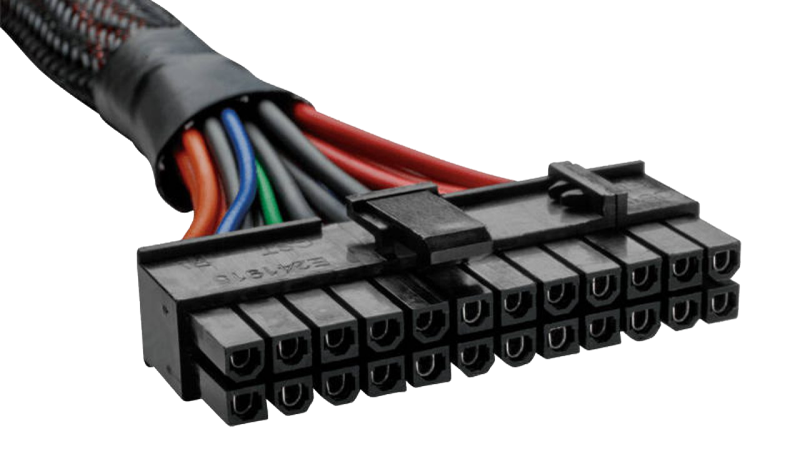
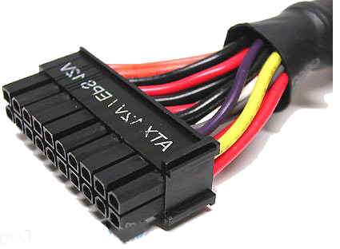

Conector fuente alimentacion tipo ATX
Ejempo del conector:


El conector ATX de 20+4 pines es el encargado de suministrar energía a prácticamente todos los componentes de
la placa base con la salvedad del procesador, y es que por eso tenemos el conector EPS de 4+4 pines que, en
muchas fuentes, viene rotulado directamente como CPU, ya que sirve para proporcionar energía en exclusiva al
procesador. El ATX de 20+4 pines es entonces para todo lo demás, que incluye puertos USB, zócalos PCI-Express,
memoria RAM, etc.